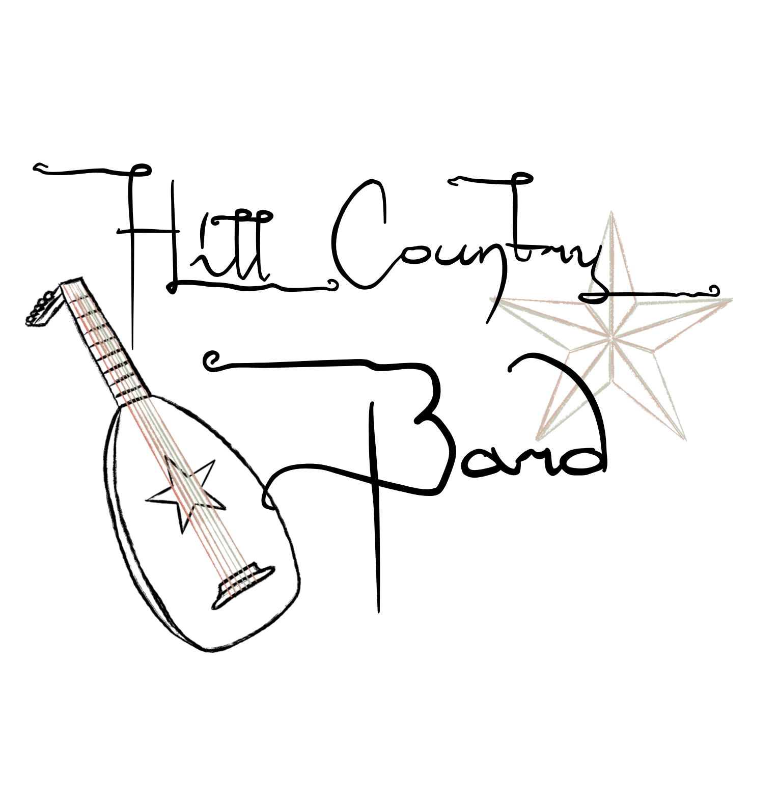

Hill Country Bard
About Me
I live in Dripping Springs, TX and have been playing guitar for over 20 years. As a one-man band acoustic performer, I bring a full, rich sound to every show.

Teaching Experience
I’ve spent years teaching guitar to students of all ages and skill levels, helping them build confidence and develop their own musical style.
Drumming Background
My experience as a drummer shapes my rhythm and timing, bringing depth and groove to every performance.
Other Instruments
- Violin
- Piano
- Mandolin
- Hand Drums